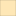

<!doctype html>
<html lang="en">
    <head>
        <meta charset="utf-8">
        <meta http-equiv="X-UA-Compatible" content="IE=edge">
        <meta name="viewport" content="initial-scale=1,user-scalable=no,maximum-scale=1,width=device-width">
        <meta name="mobile-web-app-capable" content="yes">
        <meta name="apple-mobile-web-app-capable" content="yes">
        <link rel="stylesheet" href="css/leaflet.css">
        <link rel="stylesheet" href="css/qgis2web.css"><link rel="stylesheet" href="css/fontawesome-all.min.css">
        <style>
        html, body, #map {
            width: 100%;
            height: 100%;
            padding: 0;
            margin: 0;
        }
        </style>
        <title>CO2 Emissions and Air Quality in Europe in 2018</title>
    </head>
    <body>
        <div id="map">
        </div>
        <script src="js/qgis2web_expressions.js"></script>
        <script src="js/leaflet.js"></script>
        <script src="js/leaflet.rotatedMarker.js"></script>
        <script src="js/leaflet.pattern.js"></script>
        <script src="js/leaflet-hash.js"></script>
        <script src="js/Autolinker.min.js"></script>
        <script src="js/rbush.min.js"></script>
        <script src="js/labelgun.min.js"></script>
        <script src="js/labels.js"></script>
        <script src="data/CO2emissionspercapitaton_3.js"></script>
        <script>
        var highlightLayer;
        function highlightFeature(e) {
            highlightLayer = e.target;

            if (e.target.feature.geometry.type === 'LineString') {
              highlightLayer.setStyle({
                color: '#f4f43a',
              });
            } else {
              highlightLayer.setStyle({
                fillColor: '#f4f43a',
                fillOpacity: 0.5
              });
            }
        }
        var map = L.map('map', {
            zoomControl:true, maxZoom:28, minZoom:1
        })
        var hash = new L.Hash(map);
        map.attributionControl.setPrefix('<a href="https://github.com/tomchadwin/qgis2web" target="_blank">qgis2web</a> &middot; <a href="https://leafletjs.com" title="A JS library for interactive maps">Leaflet</a> &middot; <a href="https://qgis.org">QGIS</a>');
        var autolinker = new Autolinker({truncate: {length: 30, location: 'smart'}});
        var bounds_group = new L.featureGroup([]);
        function setBounds() {
            if (bounds_group.getLayers().length) {
                map.fitBounds(bounds_group.getBounds());
            }
        }
        map.createPane('pane_GoogleRoad_0');
        map.getPane('pane_GoogleRoad_0').style.zIndex = 400;
        var layer_GoogleRoad_0 = L.tileLayer('https://mt1.google.com/vt/lyrs=m&x={x}&y={y}&z={z}', {
            pane: 'pane_GoogleRoad_0',
            opacity: 1.0,
            attribution: '<a href="https://www.google.at/permissions/geoguidelines/attr-guide.html">Map data ©2015 Google</a>',
            minZoom: 1,
            maxZoom: 28,
            minNativeZoom: 0,
            maxNativeZoom: 20
        });
        layer_GoogleRoad_0;
        map.addLayer(layer_GoogleRoad_0);
        map.createPane('pane_ESRISatellite_1');
        map.getPane('pane_ESRISatellite_1').style.zIndex = 401;
        var layer_ESRISatellite_1 = L.tileLayer('https://server.arcgisonline.com/ArcGIS/rest/services/World_Imagery/MapServer/tile/{z}/{y}/{x}', {
            pane: 'pane_ESRISatellite_1',
            opacity: 1.0,
            attribution: '',
            minZoom: 1,
            maxZoom: 28,
            minNativeZoom: 0,
            maxNativeZoom: 20
        });
        layer_ESRISatellite_1;
        map.addLayer(layer_ESRISatellite_1);
        map.createPane('pane_ESRIGraydark_2');
        map.getPane('pane_ESRIGraydark_2').style.zIndex = 402;
        var layer_ESRIGraydark_2 = L.tileLayer('http://services.arcgisonline.com/ArcGIS/rest/services/Canvas/World_Dark_Gray_Base/MapServer/tile/{z}/{y}/{x}', {
            pane: 'pane_ESRIGraydark_2',
            opacity: 1.0,
            attribution: '',
            minZoom: 1,
            maxZoom: 28,
            minNativeZoom: 0,
            maxNativeZoom: 20
        });
        layer_ESRIGraydark_2;
        map.addLayer(layer_ESRIGraydark_2);
        function pop_CO2emissionspercapitaton_3(feature, layer) {
            layer.on({
                mouseout: function(e) {
                    for (i in e.target._eventParents) {
                        e.target._eventParents[i].resetStyle(e.target);
                    }
                },
                mouseover: highlightFeature,
            });
            var popupContent = '<table>\
                    <tr>\
                        <th scope="row">Country (2018)</th>\
                        <td>' + (feature.properties['Country'] !== null ? autolinker.link(feature.properties['Country'].toLocaleString()) : '') + '</td>\
                    </tr>\
                    <tr>\
                        <th scope="row">Production-based CO2 emissions (million ton)</th>\
                        <td>' + (feature.properties['CO2'] !== null ? autolinker.link(feature.properties['CO2'].toLocaleString()) : '') + '</td>\
                    </tr>\
                    <tr>\
                        <th scope="row">CO2 emissions per Capita (ton)</th>\
                        <td>' + (feature.properties['CO2 per ca'] !== null ? autolinker.link(feature.properties['CO2 per ca'].toLocaleString()) : '') + '</td>\
                    </tr>\
                    <tr>\
                        <th scope="row">Environmental Performance Index (0-100)</th>\
                        <td>' + (feature.properties['EPI'] !== null ? autolinker.link(feature.properties['EPI'].toLocaleString()) : '') + '</td>\
                    </tr>\
                    <tr>\
                        <th scope="row">Air Quality score (0-100)</th>\
                        <td>' + (feature.properties['Air Qualit'] !== null ? autolinker.link(feature.properties['Air Qualit'].toLocaleString()) : '') + '</td>\
                    </tr>\
                </table>';
            layer.bindPopup(popupContent, {maxHeight: 400});
        }

        function style_CO2emissionspercapitaton_3_0(feature) {
            if (feature.properties['CO2 per ca'] >= 1.450000 && feature.properties['CO2 per ca'] <= 2.000000 ) {
                return {
                pane: 'pane_CO2emissionspercapitaton_3',
                opacity: 1,
                color: 'rgba(35,35,35,0.5215686274509804)',
                dashArray: '',
                lineCap: 'butt',
                lineJoin: 'miter',
                weight: 1, 
                fill: true,
                fillOpacity: 1,
                fillColor: 'rgba(43,131,186,1.0)',
                interactive: true,
            }
            }
            if (feature.properties['CO2 per ca'] >= 2.000000 && feature.properties['CO2 per ca'] <= 4.000000 ) {
                return {
                pane: 'pane_CO2emissionspercapitaton_3',
                opacity: 1,
                color: 'rgba(35,35,35,0.5215686274509804)',
                dashArray: '',
                lineCap: 'butt',
                lineJoin: 'miter',
                weight: 1, 
                fill: true,
                fillOpacity: 1,
                fillColor: 'rgba(145,203,168,1.0)',
                interactive: true,
            }
            }
            if (feature.properties['CO2 per ca'] >= 4.000000 && feature.properties['CO2 per ca'] <= 6.000000 ) {
                return {
                pane: 'pane_CO2emissionspercapitaton_3',
                opacity: 1,
                color: 'rgba(35,35,35,0.5215686274509804)',
                dashArray: '',
                lineCap: 'butt',
                lineJoin: 'miter',
                weight: 1, 
                fill: true,
                fillOpacity: 1,
                fillColor: 'rgba(221,241,180,1.0)',
                interactive: true,
            }
            }
            if (feature.properties['CO2 per ca'] >= 6.000000 && feature.properties['CO2 per ca'] <= 8.000000 ) {
                return {
                pane: 'pane_CO2emissionspercapitaton_3',
                opacity: 1,
                color: 'rgba(35,35,35,0.5215686274509804)',
                dashArray: '',
                lineCap: 'butt',
                lineJoin: 'miter',
                weight: 1, 
                fill: true,
                fillOpacity: 1,
                fillColor: 'rgba(254,223,153,1.0)',
                interactive: true,
            }
            }
            if (feature.properties['CO2 per ca'] >= 8.000000 && feature.properties['CO2 per ca'] <= 10.000000 ) {
                return {
                pane: 'pane_CO2emissionspercapitaton_3',
                opacity: 1,
                color: 'rgba(35,35,35,0.5215686274509804)',
                dashArray: '',
                lineCap: 'butt',
                lineJoin: 'miter',
                weight: 1, 
                fill: true,
                fillOpacity: 1,
                fillColor: 'rgba(245,144,83,1.0)',
                interactive: true,
            }
            }
            if (feature.properties['CO2 per ca'] >= 10.000000 && feature.properties['CO2 per ca'] <= 15.840000 ) {
                return {
                pane: 'pane_CO2emissionspercapitaton_3',
                opacity: 1,
                color: 'rgba(35,35,35,0.5215686274509804)',
                dashArray: '',
                lineCap: 'butt',
                lineJoin: 'miter',
                weight: 1, 
                fill: true,
                fillOpacity: 1,
                fillColor: 'rgba(215,25,28,1.0)',
                interactive: true,
            }
            }
        }
        map.createPane('pane_CO2emissionspercapitaton_3');
        map.getPane('pane_CO2emissionspercapitaton_3').style.zIndex = 403;
        map.getPane('pane_CO2emissionspercapitaton_3').style['mix-blend-mode'] = 'normal';
        var layer_CO2emissionspercapitaton_3 = new L.geoJson(json_CO2emissionspercapitaton_3, {
            attribution: '<a href="https://ourworldindata.org/co2-and-other-greenhouse-gas-emissions">CO₂ and Greenhouse Gas Emissions</a> &middot; <a href="https://epi.yale.edu/" >Environmental Performance Index (EPI)</a> | Alex Dahl 02-10-2022',
            interactive: true,
            dataVar: 'json_CO2emissionspercapitaton_3',
            layerName: 'layer_CO2emissionspercapitaton_3',
            pane: 'pane_CO2emissionspercapitaton_3',
            onEachFeature: pop_CO2emissionspercapitaton_3,
            style: style_CO2emissionspercapitaton_3_0,
        });
        bounds_group.addLayer(layer_CO2emissionspercapitaton_3);
        map.addLayer(layer_CO2emissionspercapitaton_3);
            var title = new L.Control();
            title.onAdd = function (map) {
                this._div = L.DomUtil.create('div', 'info');
                this.update();
                return this._div;
            };
            title.update = function () {
                this._div.innerHTML = '<h2>CO2 Emissions and Air Quality in Europe in 2018</h2>';
            };
            title.addTo(map);
            var abstract = new L.Control({'position':'bottomright'});
            abstract.onAdd = function (map) {
                this._div = L.DomUtil.create('div',
                'leaflet-control abstract');
                this._div.id = 'abstract'

                    abstract.show();
                    return this._div;
                };
                abstract.show = function () {
                    this._div.classList.remove("abstract");
                    this._div.classList.add("abstractUncollapsed");
                    this._div.innerHTML = 'This is a web map inspired by a GIS-assignment for <a href= "https://www.ocellus.se/" style="text-decoration: none"> OCELLUS InformationSystems AB.<a/>';
            };
            abstract.addTo(map);
        var baseMaps = {};
        L.control.layers(baseMaps,{'CO2 emissions per capita (ton)<br /><table><tr><td style="text-align: center;"></td><td>1.45 - 2</td></tr><tr><td style="text-align: center;"></td><td>2 - 4</td></tr><tr><td style="text-align: center;"></td><td>4 - 6</td></tr><tr><td style="text-align: center;"></td><td>6 - 8</td></tr><tr><td style="text-align: center;"></td><td>8 - 10</td></tr><tr><td style="text-align: center;"></td><td>10 - 15.84</td></tr></table>': layer_CO2emissionspercapitaton_3,"ESRI Gray (dark)": layer_ESRIGraydark_2,"ESRI Satellite": layer_ESRISatellite_1,"Google Road": layer_GoogleRoad_0,}).addTo(map);
        setBounds();
        </script>
    </body>
</html>
